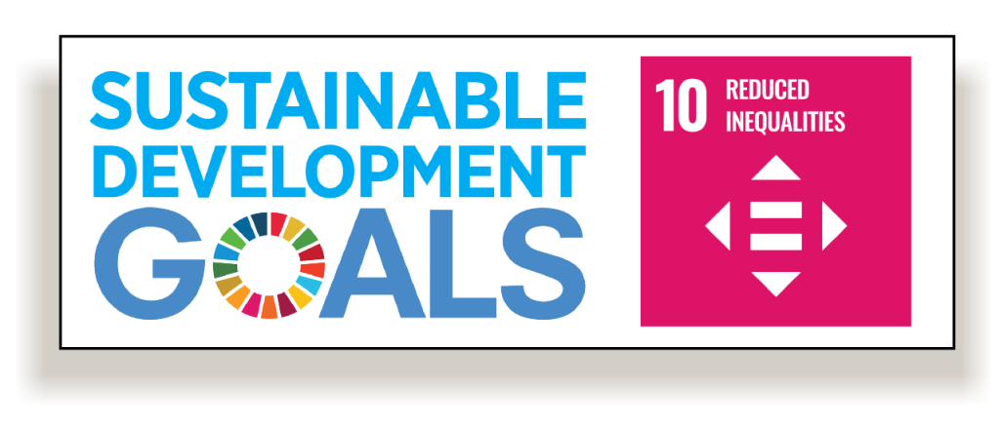

Welcome to our site,
which is devoted to discussing and placing into context the United Nations Sustainable Development Goal 10 of combatting inequality between and within nations. Economic, social, or political inequality is quite possibly one of the world's most urgent issues at present, touching the lives of millions and circumscribing potential for expansion and development. This site aims to offer cut-through information on causes, effects, and solutions to inequality, as well as showcasing efforts, policy, and best practice from globally. By understanding the forces driving divergence and formulating inclusive policies, we intend to enlighten, empower, and motivate action towards a more balanced and equal world community.
